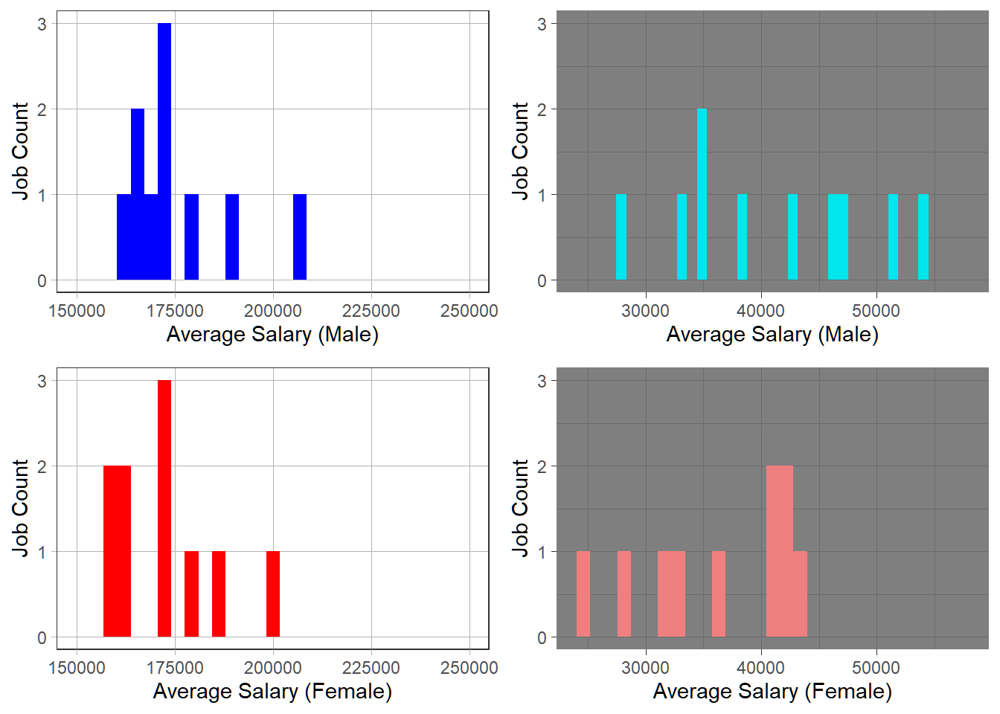
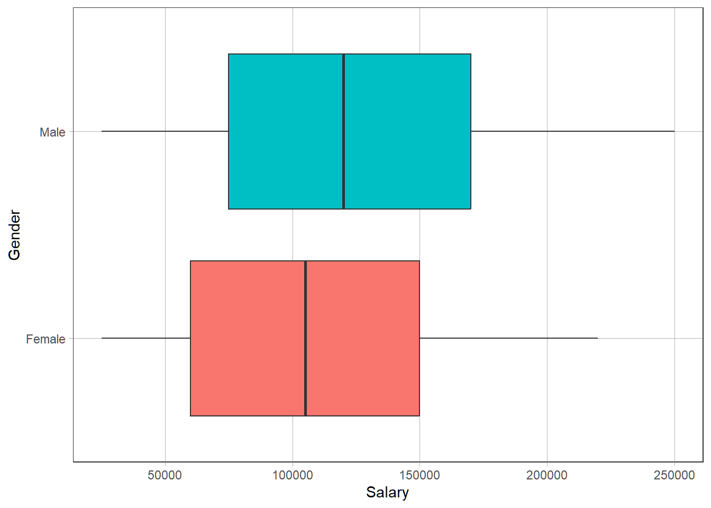
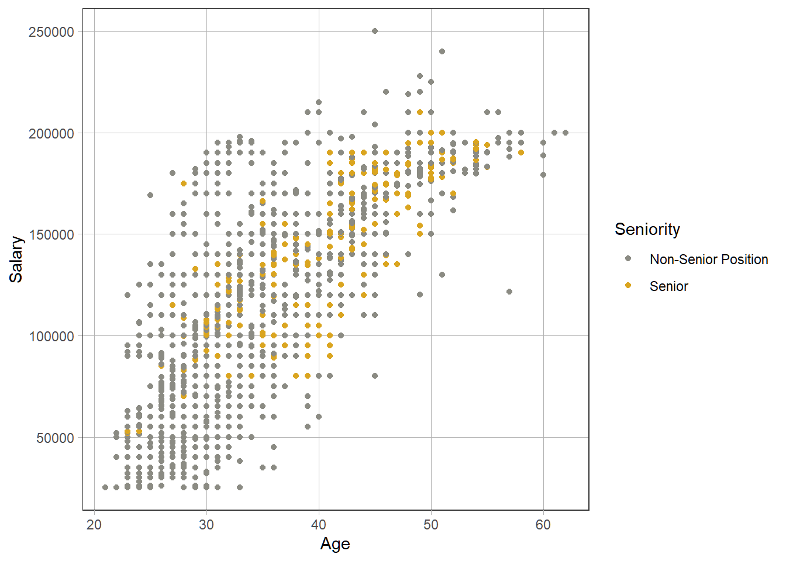
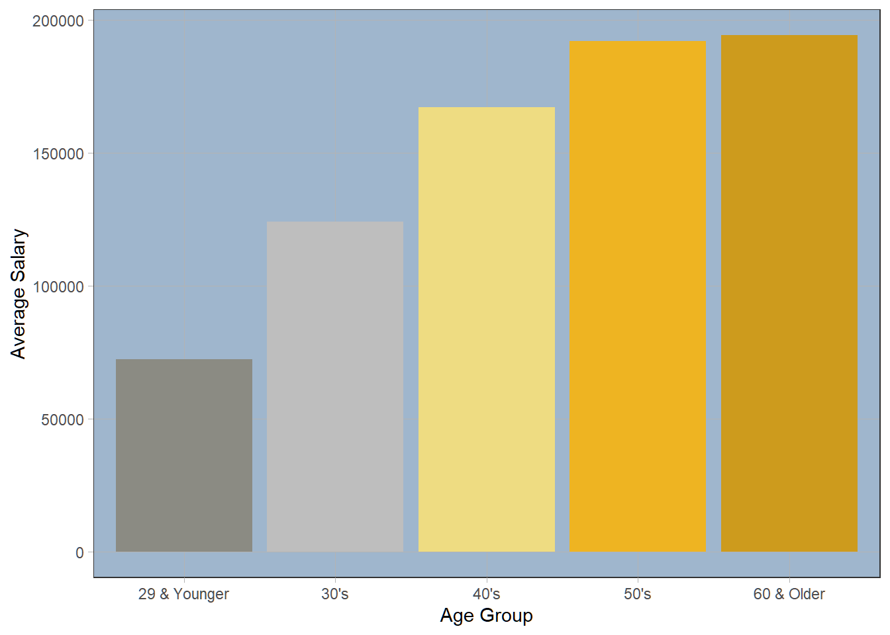
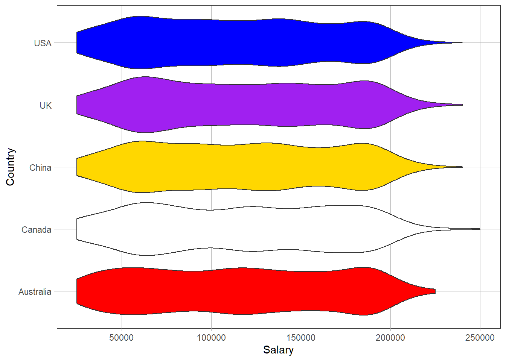
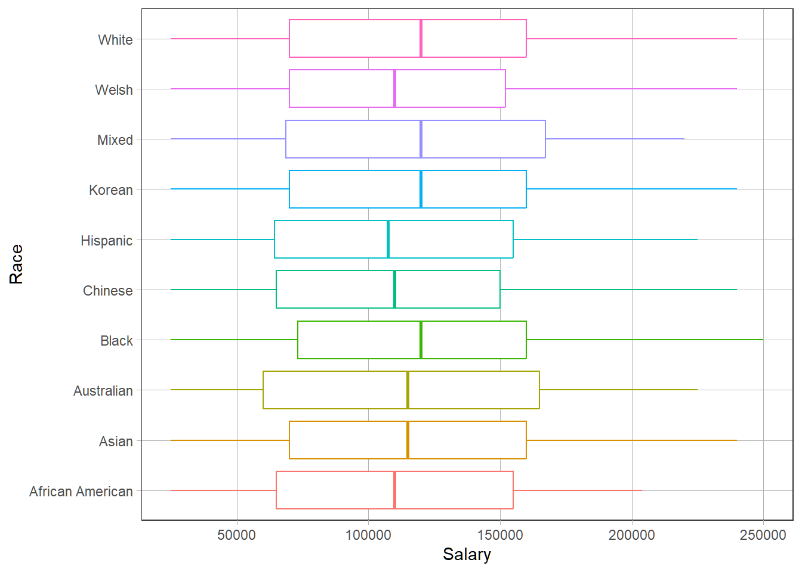
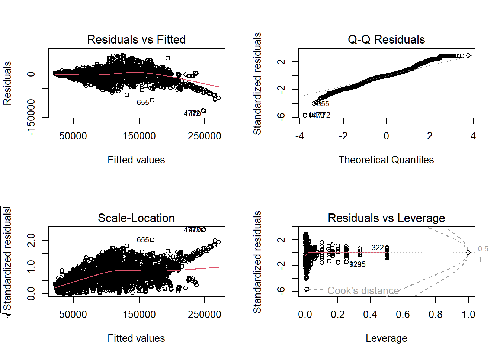
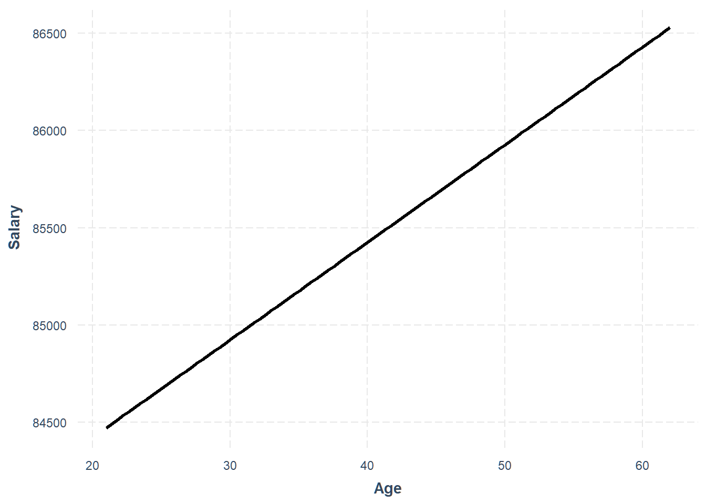
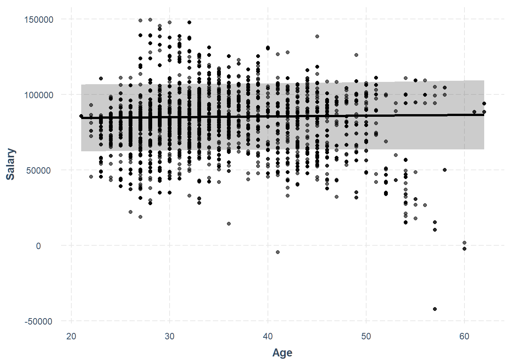
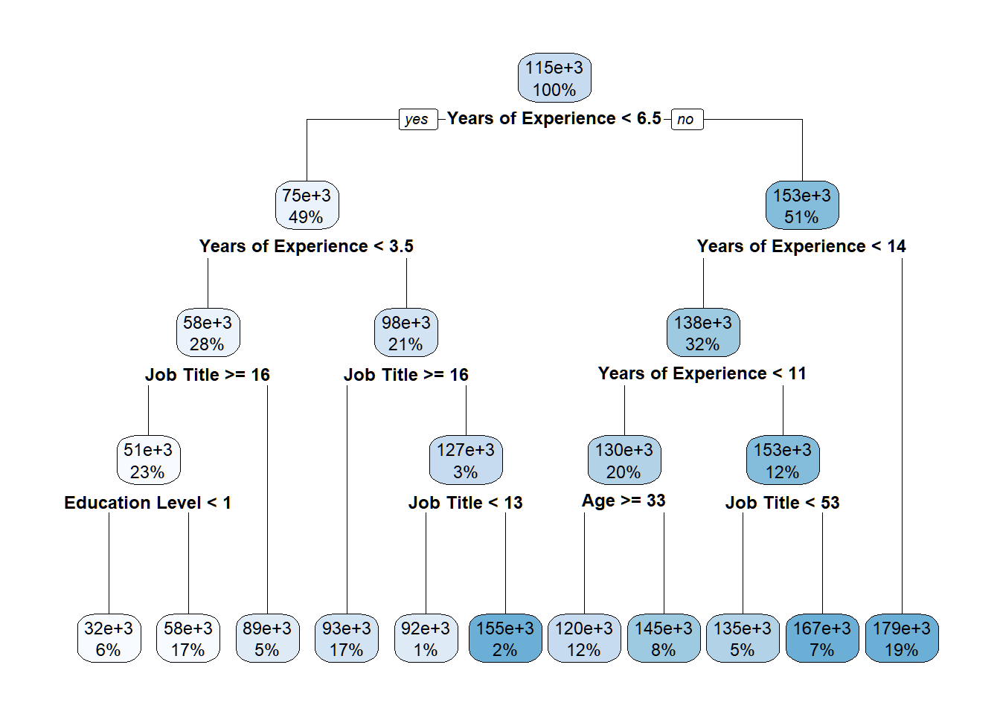

The dataset creator sourced this data from reputable employment websites and surveys, leaving out names and companies to ensure privacy for both parties.
Salary <-read_csv("Salary.csv")
Rows: 6684 Columns: 9
── Column specification ────────────────────────────────────────────────────────
Delimiter: ","
chr (4): Gender, Job Title, Country, Race
dbl (5): Age, Education Level, Years of Experience, Salary, Senior
ℹ Use `spec()` to retrieve the full column specification for this data.
ℹ Specify the column types or set `show_col_types = FALSE` to quiet this message.
There are 9 variables in the data, with 6684 observations. The variables are as follows: Age, Gender, Education Level, Job Title, Years of Experience, Salary, Country, Race, and Senior. Education level is encoded from 0-3, 0 meaning the employee has a high school diploma as their highest level of education, 1 meaning that they have a Bachelor’s degree, 2 meaning they have a Master’s, and 3 meaning they have a Doctorate’s. The senior variable is a binary value indicating whether or not they have a senior-level position. Salary has been converted into USD for all countries for the sake of being on the same scale.
head(Salary)
# A tibble: 6 × 9
Age Gender `Education Level` `Job Title` `Years of Experience` Salary
<dbl> <chr> <dbl> <chr> <dbl> <dbl>
1 32 Male 1 Software Engineer 5 90000
2 28 Female 2 Data Analyst 3 65000
3 45 Male 3 Manager 15 150000
4 36 Female 1 Sales Associate 7 60000
5 52 Male 2 Director 20 200000
6 29 Male 1 Marketing Analyst 2 55000
# ℹ 3 more variables: Country <chr>, Race <chr>, Senior <dbl>
Questions and Goals:
Our main question we wanted to answer was “Can we accurately predict the salary of a job given the predictors in this data set”, those being Age, Senior, Country, Race, Job Title, Gender, and Education Level. We also wanted to explore the roles each of the predictors play in determining Salary. Some secondary questions we asked to determine this during our EDA were: “Is one gender more often lower-paid than another?”, “Does an increase in age usually lead to an increase in salary?”, “How big a difference does a job being a senior position make on average to Salary?”, and more to go along with that: “Are older people more likely to be the ones occupying senior positions?”. Whether or not the Education Level or Country of the job seems to give access to a higher salary were also questions we asked and found answers to.
Preprocessing:
For preprocessing, we quickly found 2 issues: First, we realized that certain job titles only appear once in the entire data set, one of the most notable being CEO. While this had one of the largest values for salary in the entire dataset, we realized that this would not only skew our EDA but would also cause problems for our testing and training splits later on. Therefore, we decided to drop them.
We then found an issue with values that were likely misreported within the dataset. Upon analyzing the bottom-most values for annual salary in the dataset, we found multiple employees reported only making 3 figures with jobs that in every other case paid well above that, such as Software Engineer Manager. We could be making a large assumption here that this was a full-time position being paid a yearly salary, but even if these values were correctly recorded, it would still be inconsistent with the rest of the dataset and cause a skew in the lowest-paying jobs.
##PREPROCESSING#removing any job only included once Salary_cleaned <- Salary %>%group_by(`Job Title`) %>%mutate(count =n() ) %>%filter(count >1) %>%ungroup() %>%select(-count)#dropping probable mistaken entries (reported less than 1k salaries)Salary_cleaned <- Salary_cleaned %>%arrange(Salary) %>%filter(!row_number() %in%c(1,2,3,4))
EDA:
Exploring Gender:
We wanted to explore if Females still earned less than men on average, as they have historically, so we first looked at a general average of all salaries of men versus those of women.
#EDA (Gender)##GENDER DIFFERENCESSalary_cleaned_by_gender <- Salary_cleaned %>%group_by(Gender) %>%summarize(Mean =mean(Salary, na.rm =TRUE))#On average, women earn less than menSalary_cleaned_by_gender
# A tibble: 2 × 2
Gender Mean
<chr> <dbl>
1 Female 107981.
2 Male 121503.
This table shows a sizable difference (about 19000) in the average salary of a male over one of a female, supporting our initial theory. We then split up the data to more deeply delve into the differences in pay between the two Genders.
#Splitting salary into male and femalesalary_male <- Salary_cleaned %>%group_by(Gender) %>%filter(Gender =="Male")salary_female <- Salary_cleaned %>%group_by(Gender) %>%filter(Gender =="Female")
After splitting the data, we tried making four plots showing the top 15 highest-salary jobs and the bottom 15 lowest-salary jobs for comparison.
the above plots don’t look good… they are mostly the same jobs trying again but with averaging jobs with the same title together.
Upon making the first few plots, we realized that the above plots did not look good as they were mostly showing the same job titles’ salaries repeated multiple times. We remade the graphs but this time combined the job titles to eliminate repeated Job Titles. First, we made new tables to use with a new Average_Salary column for each job title, then eliminated other columns and rows besides unique Average_Salaries and Job Titles since those were what we were focusing on.
#averaging jobs with the same title togethersalary_male_unique <- salary_male %>%group_by(`Job Title`) %>%mutate(Average_Salary =mean(Salary)) %>%distinct(Average_Salary)salary_female_unique <- salary_female %>%group_by(`Job Title`) %>%mutate(Average_Salary =mean(Salary)) %>%distinct(Average_Salary)salary_male_unique
# A tibble: 10 × 2
`Job Title` Average_Salary
<chr> <dbl>
1 Director of Data Science 207742.
2 Marketing Director 189900
3 Director of Engineering 180000
4 Software Engineer Manager 173385.
5 Project Engineer 173344.
6 Director of Operations 171667.
7 Director of Finance 170000
8 Research Director 165870.
9 Data Scientist 165062.
10 Director of Marketing 160641.
# A tibble: 10 × 2
`Job Title` Average_Salary
<chr> <dbl>
1 Director of Data Science 200769.
2 Director of Human Resources 187500
3 Director of Finance 180000
4 Director of Operations 174000
5 Product Manager 172476.
6 Software Engineer Manager 171793.
7 Data Scientist 162667.
8 Marketing Director 162667.
9 Data Engineer 160000
10 Research Director 159310.
We made the plots again, making sure to standardize the x-axis values to more clearly show any differences in pay. We made male plots blue, and female red, top salary plots have a light theme, and bottom salary plots use the dark theme to differentiate and help show the comparisons we were looking for.
We used the “cowplot” package to easily combine all four plots into one graphic for a more complete visual comparison of gender salary differences on the poles of the data.
`stat_bin()` using `bins = 30`. Pick better value with `binwidth`.
Warning: Removed 1 row containing missing values or values outside the scale range
(`geom_bar()`).
Warning: Removed 2 rows containing missing values or values outside the scale range
(`geom_bar()`).
`stat_bin()` using `bins = 30`. Pick better value with `binwidth`.
Warning: Removed 1 row containing missing values or values outside the scale range
(`geom_bar()`).
`stat_bin()` using `bins = 30`. Pick better value with `binwidth`.
Warning: Removed 2 rows containing missing values or values outside the scale range
(`geom_bar()`).

After doing this, we realized that we could do almost the same thing, but in a broader sense (as well as faster), by just using a box plot.
#comparing all salariesggplot(Salary_cleaned, aes(x = Salary, y = Gender)) +geom_boxplot(aes(fill =as.factor(`Gender`))) +scale_color_manual(values =c("blue", "red")) +theme(legend.position ="none")

The box plots, as well as the four plots prior, all point to what we had guessed which was that males do indeed earn higher salaries than females on average.
Exploring Education Level:
Next, we examined the role education level played on salary amount. This time, we started with the general plot comparing all salaries grouped by Education Level, then moved on to showing the average salary of each Education Level after that.
We were pleased to see not only that the data seemed to indicate that going to college is indeed still worth it, but that the data was nice and linear as well for both the raw and the average salary by education level comparisons.
Exploring Age and Seniority:
Age and Seniority were two predictors we were especially excited to look at, and we had high expectations on the strength of the correlation between them and the salaries those of high age and in senior positions would hold. Once again, we showed a general plot using the raw salary data when compared with Age, this time using whether or not the job holder had the Senior status to determine the color of the plot point. After getting a nice-looking scatter plot from that (and being very happy with the color palette), we could see that there was some positive correlation between the age of a person, whether or not they would be in a senior position, and their salary. To get a slightly different perspective, we grouped the ages by decade and compared each Age Group’s average salary to each other, and were once again satisfied to see a seemingly linear relationship between Age and Salary.
#EDA (Age/Seniority)ggplot(Salary_cleaned, aes(y = Salary, x = Age, color =as.factor(Senior))) +scale_color_manual(values =c("ivory4", "goldenrod"),labels =c("Non-Senior Position", "Senior")) +labs(color ="Seniority") +geom_point()

salary_by_age <- Salary_cleaned %>%mutate(Age_Group =case_when( Age <30~"29 & Younger", Age <40& Age >=30~"30's", Age <50& Age >=40~"40's", Age <60& Age >=50~"50's", Age >=60~"60 & Older" )) %>%group_by(Age_Group) %>%summarize(Average_Salary =mean(Salary))ggplot(salary_by_age, aes(x = Age_Group,y = Average_Salary,fill =as.factor(Age_Group)),) +scale_fill_manual(values =c("ivory4","grey","lightgoldenrod2","goldenrod2","goldenrod3")) +geom_col() +theme(legend.position ="none",panel.background =element_rect(fill ="slategray3")) +labs(x ="Age Group", y ="Average Salary")

Exploring Country and Race:
The first thing we did to look at Country and Race was to use multilevel grouping to get a better understanding of the demographics of the data. After noting the variety of Races in each Country, we proceeded to make a violin plot comparing the Salaries of those living in different Countries. That plot did not look great, so we reverted to using box plots for comparing Races’ Salary earnings. The main takeaway we received from these two plots was that the Country and Race of a person do not seem to be significant factors in determining one’s salary.
`summarise()` has grouped output by 'Country'. You can override using the
`.groups` argument.
# A tibble: 17 × 3
# Groups: Country [5]
Country Race count
<chr> <chr> <int>
1 Australia Asian 470
2 Australia Australian 449
3 Australia White 407
4 Canada Asian 452
5 Canada Black 428
6 Canada White 431
7 China Chinese 441
8 China Korean 454
9 China White 438
10 UK Asian 328
11 UK Mixed 329
12 UK Welsh 330
13 UK White 327
14 USA African American 349
15 USA Asian 330
16 USA Hispanic 318
17 USA White 346
ggplot(Salary_cleaned, aes(x = Salary, y = Country, fill =as.factor(Country))) +scale_fill_manual(values =c("red", "white", "gold", "purple", "blue")) +geom_violin() +theme(legend.position ="none")

ggplot(Salary_cleaned, aes(x = Salary, y = Race, color =as.factor(Race))) +geom_boxplot() +theme(legend.position ="none")

Exploring Job Title:
When thinking of what to explore with Job Titles, we were at first a little unsure of what to compare, since there were so many unique Job Titles in the data. We ended up simply making a table of the top 10 highest-salary jobs and the “top 10” lowest-salary jobs.
# A tibble: 10 × 2
`Job Title` Average_Salary
<chr> <dbl>
1 Director of Data Science 204561.
2 Director of Human Resources 187500
3 Marketing Director 183615.
4 Director of Engineering 180000
5 Director of Finance 175000
6 Software Engineer Manager 172961.
7 Director of Operations 172727.
8 Project Engineer 166064.
9 Data Scientist 164099.
10 Research Director 163333.
One interesting thing that we could see from these tables is that Job Titles with “Director” and “Engineer” are featured frequently in the higher end of the Salary data. This could either be an insight into the types of jobs that give high Salaries, or the types of jobs that the data was scraped from. Either way, the wide range of names meant that job titles were most likely going to be largely ineffective as a predictor for our models.
Modeling:
Now that we have gathered some insights about this data as well as having answered our minor questions from our exploratory analysis, we will use modeling to answer our main question.
Before we get into creating the models, we will split the salary dataset into a training and testing data frame, using a 90/10 proportion respectively.
To create a ridge regression model, we need to turn all of our datasets into numeric factors. We will get to the ridge regression model later. This is simply up here for rendering reasons.
Now that we split the data into training and testing, we will create our first model: a multiple linear regression model. A multiple linear regression model is simple, yet it can still give a good benchmark for comparisons to our other models.
As we can see, the most significant predictors are education level, years of experience, and senior, all of which make sense as it is logical that the more years of experience you have in a profession and the higher level of education you have, the more likely you are going to earn more money than someone who has less experience and a lesser degree. Seniority also makes sense as a senior-level position undoubtedly has more responsibilities than someone who isn’t. However, we can see that several job title codes are good indicators. Jobs such as software engineer, research scientist, research director, product manager, and data scientist/analyst all appear to be very good predictors for our model. This may well be because there are simply more observations of these job titles in the data set, but all of these fields are certainly very highly-paying positions. Now, to look at the results. We can see that the model generated an R-squared value of .82, on an F-stat of 296.3, and a p-value of <2.2e-16, so needless to say, this is a respectable model; it is not perfect, but there is a strong positive correlation between the predictors and Salary.
Before we go any further, we should check the assumptions of our model to see if this dataset even can be fitted into a linear model.
par(mfrow =c(2,2))plot(fit)
Warning: not plotting observations with leverage one:
1659, 4690
Warning in sqrt(crit * p * (1 - hh)/hh): NaNs produced
Warning in sqrt(crit * p * (1 - hh)/hh): NaNs produced

Checking the normal assumptions of linear regression, we can see that the data appears to fit to an acceptable level. The residuals vs. Fitted values graph is distributed mostly evenly from end to end, and the Q-Q Residuals plot, while both tails do slightly veer off the mean, they do at least mirror each other.
Now let us fit this model into our testing data. As you can see, we bound the predicted outcomes onto the testing dataset so we can compare the predicted value to the employee’s actual salary.
While the predictions are not perfect, the model does get rather close to predicting the salary of some employees, with some predictions getting even within 1000 dollars of the actual value. However, it is not perfect, so let’s tune the model to see if we can improve the accuracy.
Let us try to optimize the model by running a step-forward selection model to see what variables it would choose to use.
Unsurprisingly, the summary has chosen the variables that I had highlighted in the original model. Interestingly, this model scraps Gender, Race, and Country; it does not consider them strong enough to influence the model.
Now that we’ve figured out the ideal variables for the model, let’s create a new model to see if we can improve the accuracy by removing unnecessary predictors:
step_fit <-lm(Salary ~ Age +`Education Level`+`Years of Experience`+ Senior +`Job Title`, data = training)summary(step_fit)
Unfortunately, Rsq remained nearly the same. However, one saving grace of the tune is that we were able to slightly reduce residual standard error and increase our F-statistic, so it may not look like it at first glance, but the model is still stronger than our initial attempt, even if only slightly.
Now that we’ve tuned our model, let us visualize the predictions.
This first plot depicts the average predicted value of Salary at each age in the data.
effect_plot(step_fit, pred = Age)

As we can see, this shows a very strong correlation between salary and age.
This second plot once again depicts salary vs age, but this time plots the residual values along with showing the confidence interval of which the model operates. We can see most of our residuals lie within the interval, although there are a few outliers at both ends.
effect_plot(step_fit, pred = Age, interval =TRUE, partial.residuals =TRUE)

Tree Methods:
For our second model, we want to use the power of Tree methods to see if it could give us a better answer to our main question than multiple linear regression. We will be mainly focusing on the Decision Tree method, but we will also create a Random Forest tree for comparison.
Decision Tree:
As we learned from class, we know that decision trees can mirror human decision-making more than other methods. We want to try to put this to the test to create a decision tree model based on our salary data to see if it can accurately predict an employee’s salary using binary decision-making.
To begin, we will make an untidy decision tree to visualize the decision-making process the model will take to determine salary.
# Non-tidy way (for visualization purposes)tree_fit <-rpart(Salary ~., data = train)rpart.plot(tree_fit)

We can see from this output that Years of Experience and job titles are very influential in decision-making. To be able to print this tree without having tens of job names crowd out the actual Boolean expression, we coded the job title to be a numeric value and factorized it, so while it’s a bit harder to understand what is happening, the lower a job title’s value is, the less money the position makes. Back to the tree, we can see that the longer someone works, the more money they will earn, and there are no questions about what position they will hold; they will still earn more money due to their experience. However, when we go down the tree in the opposite direction (meaning an employee has less experience), their position starts to play a more pivotal role.
Below we can see the decision tree model fitted onto the testing data. We can also see the predicted values compared to the actual salary values.
While the predictions appear to be fairly accurate to the actual values, we can see that the model is not good at predicting small changes within similar records. Therefore, we need to tune for it to factor in these smaller changes into the data.
New names:
• `Salary` -> `Salary...4`
• `Salary` -> `Salary...11`
As we can see from the output of the tuned decision tree above, we get an r-squared value of .958, which is an incredible accuracy considering decision trees often suffer from low predictive power. However, our RMSE value is at a staggering 10491.67, so our outliers are heavily impacting the model in a negative way, which is usually the case for Decision Trees.
Looking at our predicted values now, we can see that the model is way more accurate at factoring in slight differences between similar employees. Overall, this tuned regression decision tree does a really good job of making accurate predictions.
Random Forest Tree:
For comparison, let us look at this Random Forest Tree
# A tibble: 3 × 3
.metric .estimator .estimate
<chr> <chr> <dbl>
1 rmse standard 11885.
2 rsq standard 0.952
3 mae standard 7964.
The Random Forest tree did ever so slightly worse than the tuned decision tree model, but it still is very accurate at predicting salary.
Ridge Regression:
We chose ridge regression as our final model in the hopes that we could reduce the high amount of variance in our data to create an even more accurate model than our tuned Decision Tree.
Let us start with a ridge model that we manually assign the penalties for. Let us use a manual penalty of 4 for the estimate. We must also center and scale all of our predictors to standardize them before we fit the model.
Warning: No tuning parameters have been detected, performance will be evaluated
using the resamples with no tuning. Did you want to [tune()] parameters?
Our tuned ridge regression model overestimates salary for every employee. It is now safe to say that this model is the least accurate out of the three that we have created today.
Comparison:
To compare our models, our decision tree by far did the best, as we have previously stated, but our multiple linear regression model was still respectable, being able to predict accurately within 82% of the data. Now for the ridge regression model. Our ridge regression model was not accurate even after being scaled, centered, and tuned. We are led to believe that this may have been due to the extremely large variance within the dataset.
Conclusion:
In conclusion, we were able to answer all of our questions after analyzing and modeling the data.
Starting with our minor questions:
Women do, in fact, get paid less than men; while men do have lower-paying jobs than women, on average their jobs are likely to pay less than a man’s.
Age does play a large role in how much an employee earns. experience and age go hand in hand with one another, as you are going to gain experience as you age (unless you are unemployed or start work later than the average person). Still, being older in your field almost certainly leads to better pay. We did find, however, that 60-year-olds make about the same as 50-year-olds do on average. So do not anticipate a pay raise heading into your pre-retirement years
Having a senior-level position does indeed lead to a pay increase on average, and while we found a handful of outliers under 30, most employees in a senior-level position were older than this mark.
Having a higher level of education does lead to a higher salary, and quite significantly so. We would hope this would be the case considering the amount of time and resources it takes to get each higher level of education.
No, you do not need to move to another country to get a better wage. While there may be other reasons (such as benefits) to entice you to move abroad, salary should not be one of them.
To finish off this project, let us answer our main question: Can we accurately predict the salary of an employee given the predictors from the dataset?
The answer to this question is yes. Using a tuned decision tree model we were able to achieve an accuracy of 95% on our testing data. The model is not entirely perfect, but it is certainly good for the fact that it is predicting using regression, which is extremely hard to achieve good accuracy for.
To say the accuracy of our decision tree was a surprise would be an understatement. Considering the relatively small amount of variables within the data set we thought we would not be able to accurately predict salary, so to create such an accurate model was a pleasant surprise for us.